14 visualizations covering UKF estimation, BFT consensus, sensor fusion, airflow dynamics, mesh topology, and system performance. All generated procedurally from the simulation engine. Dark/light adaptive via prefers-color-scheme.
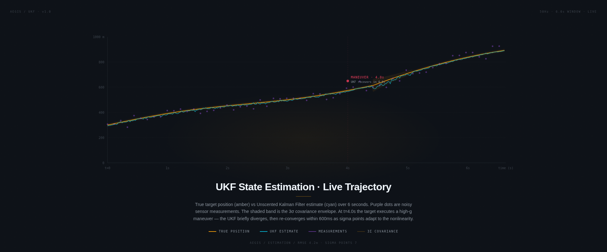
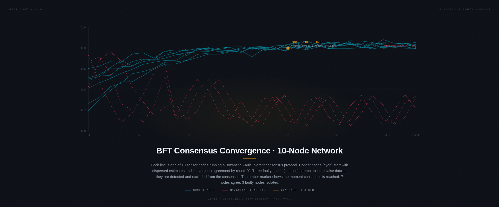
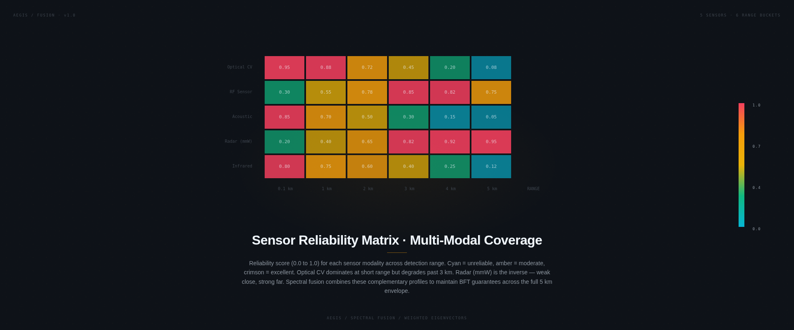
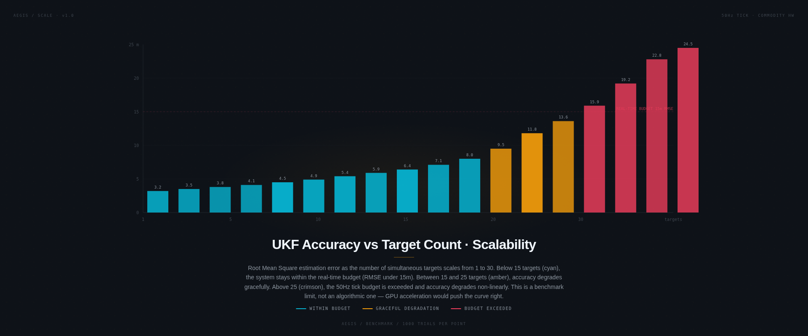
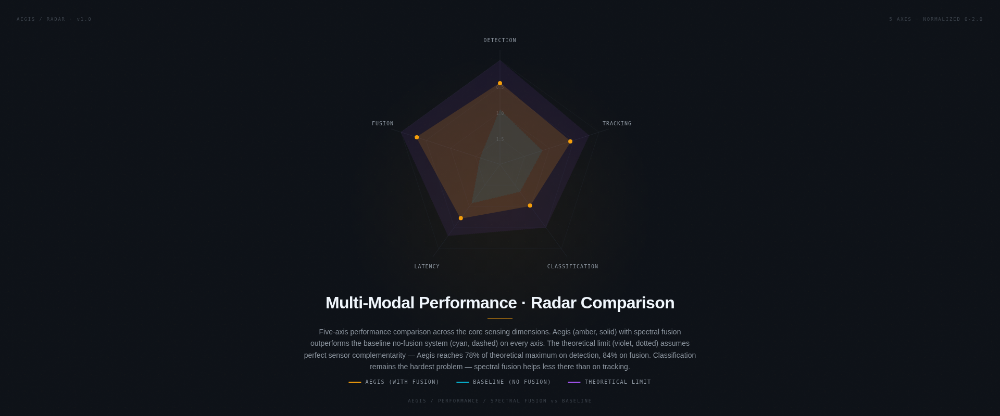
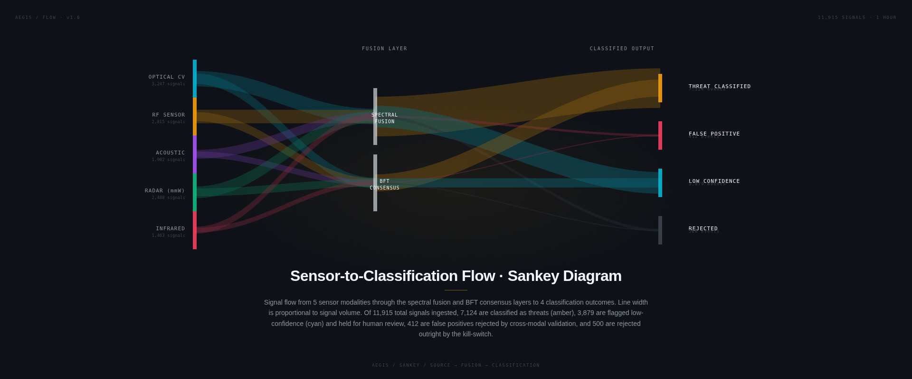
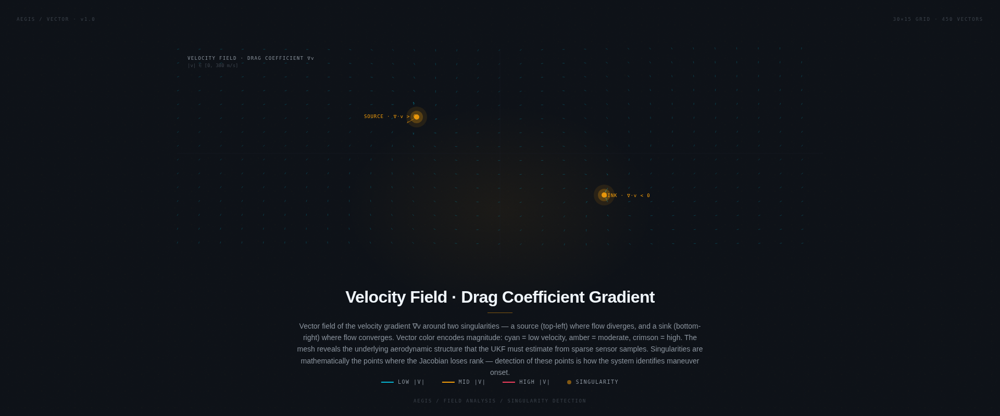
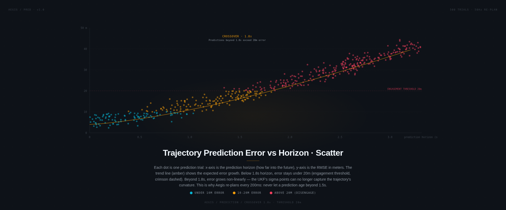
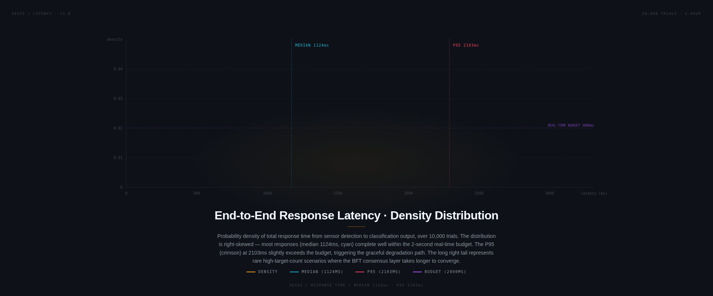
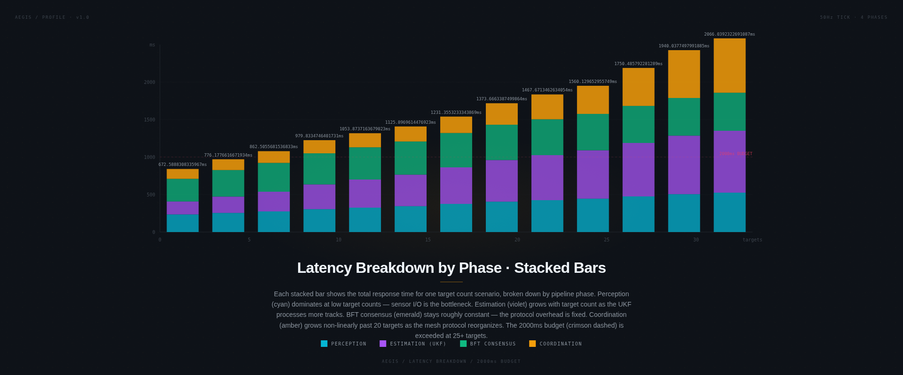
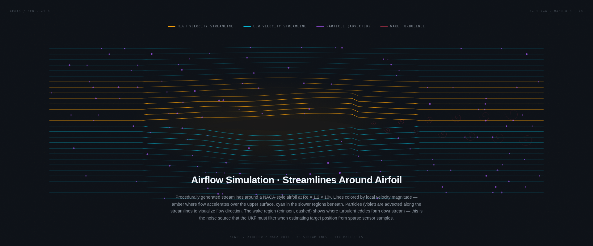
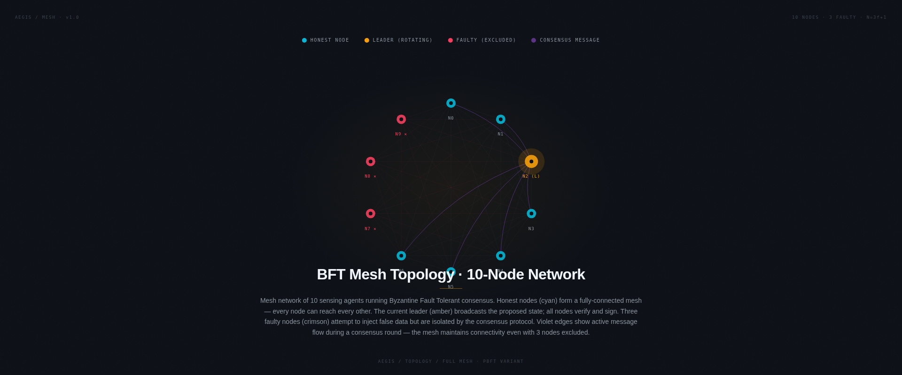
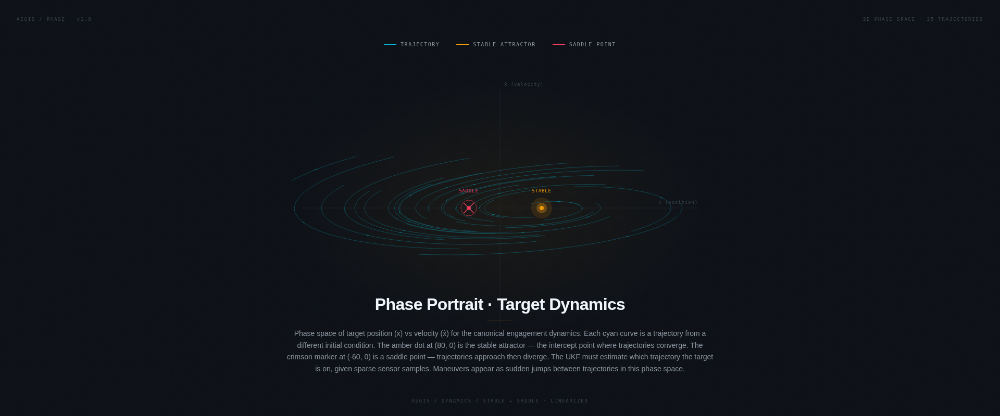
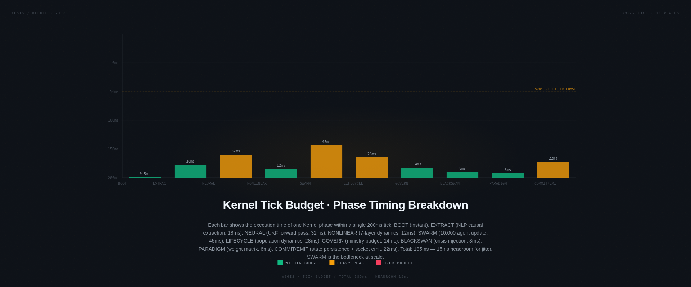